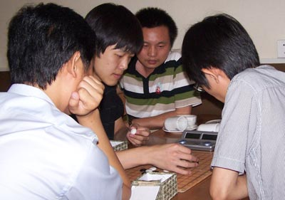

世界冠军季军凯旋
首页
五子棋新闻
#1 世界冠军季军凯旋 作者：蓝天蓝 发表时间：2011-8-13 15:47:55
世界冠军季军凯旋
作者：通讯员
原文网址链接:http://www.rifchina.com/Article/ShowArticle.asp?ArticleID=6482
第十二届世界连珠锦标赛冠军曹冬、季军黄金贤今天搭乘国航CA912提前一个小时在首都机场落地。让接机的棋友措手不及，大家只能跑着迎接满面春风的曹冬和黄金贤，他俩手捧祖国棋友献上的鲜花，笑的更灿烂。新棋友于|悦好有创意，送曹冬一个“冬瓜”，黄金贤一个“黄瓜”祝他们今后的比赛中如砍瓜切菜。新当选的国际连珠联盟副主席那威，不顾“痛风”的复发，咬着牙一瘸一拐的来到机场迎接。那威与大家亲切交谈，畅谈夺取冠军起伏跌荡过程，那威鼓励大家在明年北京举行的第九届连珠世界团体锦标赛上再创佳绩。


［此帖子已被 蓝天蓝 在 2011-8-13 16:13:04 编辑过］
［ 岑小鱼 于 2011-8-13 17:29:49 时花20金币送鲜花一朵］
#2 Re:世界冠军季军凯旋 作者：何柔 发表时间：2011-8-13 15:51:37
恭喜曹东，黄金闲！你们是中国的骄傲，你们是中国的健儿！
#3 Re:世界冠军季军凯旋 作者：弱惜 发表时间：2011-8-13 15:57:39
祝贺曹冬、黄金贤，还能看见两姐姐的玉照，要是能看见失之交臂的水精灵就好了。
#4 Re:世界冠军季军凯旋 作者：雨一直下 发表时间：2011-8-13 16:38:33
冬瓜黄瓜，哈哈有创意!祝以后都如砍瓜切菜
#5 Re:世界冠军季军凯旋 作者：岑小鱼 发表时间：2011-8-13 17:29:41
黄手上似乎确实拿了个黄瓜。。。。。。
#6 Re:世界冠军季军凯旋 作者：净释 发表时间：2011-8-13 22:29:28
恭喜中国健儿！青春无敌
#7 Re:世界冠军季军凯旋 作者：地瓜其实就是白薯 发表时间：2011-8-14 0:29:55
哎呦哎呦``
#8 Re:世界冠军季军凯旋 作者：傀儡 发表时间：2011-8-14 0:38:26
 冬瓜、黄瓜~~~还都画了笑脸啊~~~
冬瓜、黄瓜~~~还都画了笑脸啊~~~
#9 Re:世界冠军季军凯旋 作者：瑞星棋童 发表时间：2011-8-21 14:39:42
中国的骄傲！
#10 Re:世界冠军季军凯旋 作者：samaki 发表时间：2011-8-21 15:28:31
厉害
#11 Re:Re:世界冠军季军凯旋 作者：测试规则 发表时间：2011-8-21 17:33:11
引用：
原文由 弱惜 发表于 2011-8-13 15:57:39 :
祝贺曹冬、黄金贤，还能看见两姐姐的玉照，要是能看见失之交臂的水精灵就好了。
我还看见了恶魔